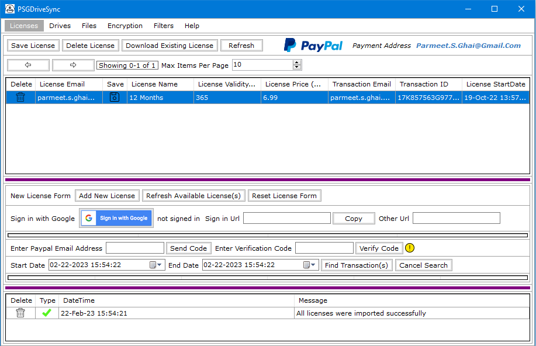

|  |
The application user interface is much like the application user interface that you would find in any other windows application. Its consists of a main application menu bar which allows users to go to different sections or tabs of the application. Each section then contains its own control bar which consists of controls that you can use to interact with objects in that section using your computer's mouse. The application also responds to generic keyboard commands as well. |